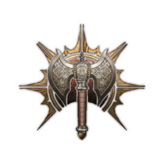

Classes

Barbarian
"The strong embrace the wild that hides inside – keen instincts, primal physicality, and most of all, an unbridled, unquenchable rage."
Subclasses: Berserker, Wildheart, Wild Magic
Druid
"Druids channel the elemental forces of nature and share a deep kinship with animals. Mastery of Wild Shape allows them to transform into beasts from all over the Realms."
Subclasses: Land, Moon, Spores
Fighter
"Fighters have mastered the art of combat, wielding weapons with unmatched skill and wearing armour like a second skin."
Subclasses: Battle Master, Eldritch Knight, Champion
Ranger
"Rangers are unrivalled scouts and trackers, honing a deep connection with nature in order to hunt their favoured prey."
Subclasses: Hunter, Beast Master, Gloom Stalker
Rogue
"With stealth, skill, and uncanny reflexes, rogues' versatility lets them get the upper hand in almost any situation."
Subclasses: Arcane Trickster, Assassin, Thief
Sorcerer
"Sorcerers are natural spellcasters, drawing on inherent magic from a gift or bloodline."
Subclasses: Wild Magic, Draconic Bloodline, Storm Sorcery
Bard
"Bards know music is more than idle fancy – it is power. Through study and adventure, these travelling troubadours master song, speech, and the magic within."
Subclasses: Lore, Valor, Sword
Monk
"Some reach enlightenment by languid meditation – others do so in the heat of battle. Monks manipulate ki to empower their own strikes and debilitate their foes."
Subclasses: Open Hand, Shadow, Four Elements

Warlock
"Bound by a pact to an all-powerful patron, warlocks trade their loyalty for supernatural abilities and unique magic."
Subclasses: Archfey, Fiend, Great Old One
"A promise made so deeply that it becomes divine in itself flows through a paladin, burning bright enough to inspire allies and smite foes."
Subclasses: Ancients, Devotion, Vengeance, Oathbreaker
Cleric
"Clerics are representatives of the gods they worship, wielding potent divine magic for good or ill."
Subclasses: Knowledge, Life, Light, Nature, Tempest, Trickery, War
Wizard
"Wizards master the arcane by specialising in individual schools of magic, combining ancient spells with modern research."
Subclasses: Abjuration, Conjuration, Divination, Enchantment, Evocation, Necromancy, Illusion, Transmutation